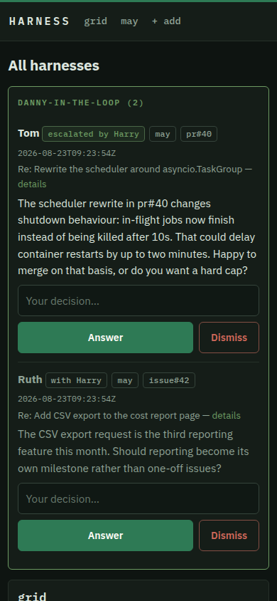
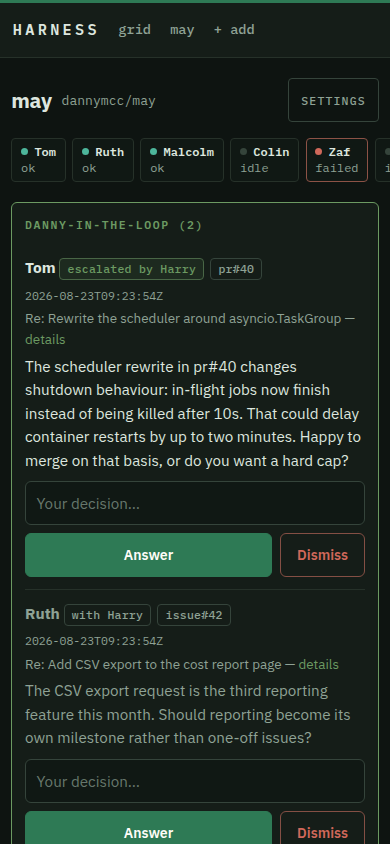

Open source · Self-hosted · Claude Agent SDK
Your repos, staffed.
Harness is an AI maintainer for your GitHub repos. A small agent section triages issues, reviews pull requests, fixes bugs with tests, and batches everything into proper versioned releases. You approve the important bits from your phone.
Self-hosted. One Docker container. SQLite. MIT licence.
HARRYconvenes. Two desks reporting.
RUTHissue #42 triaged against the code — valid, safely fixable. Assigned to Malcolm.
MALCOLMfix written in its own worktree, with tests. Suite re-run by the harness: 34 passed.
TOMpr #40 reviewed for value and quality — verdict merge, held at the policy gate.
COLINrelease queue at three. Drafting v0.9.0: version bump, changelog, credited notes.
HARRYone question is genuinely yours. Sent to your phone.
File / Personnel
A section, not a chatbot.
Harness staffs your repos with a small agent organisation — personas borrowed, affectionately, from Spooks. Everyone has a job, a scope, and a boss. Work moves through the section the way it would through a good small team: planned, assigned, reviewed, released.
Runs an hourly stand-up across every desk. Blockers become directives, stuck work is requeued, and staffing requests are granted or declined against backlog and spend. Questions from the team come to Harry first — only what is genuinely yours reaches you.
Tom, Adam, Ros, Lucas… each owns a desk: plans the cycle, actions Harry's directives, assigns fixes, and asks for more engineers when the backlog outgrows the team.
Triages issues against the actual code and reviews pull requests for value as well as quality — is this worth having, not just is it tidy.
Writes the fixes, with tests, each in its own git worktree. When the backlog demands it, Harry hires more engineers and they work in parallel.
Runs the release cycle: version bump, changelog, release notes with contributor credits, docs check — then the dev → main pull request for your approval.
On-demand, read-only security review of a repo: auth, injection, uploads, secrets, deployment config. Findings ranked by severity.
Hourly housekeeping: prunes old runs and logs, compacts state, and keeps 200-word rolling desk notes so prompts stay small and memory stays sharp.
File / Procedure
How a fix happens.
From an issue landing to a release shipping, in order. The order is the point — nothing skips a step.
An issue lands
Ruth investigates it against the actual code, not just the report. Valid and safely fixable, it goes to an engineer. Everything else gets a drafted, courteous reply and waits for you.
The fix is written in isolation
Each engineer works in their own git worktree, so fixes run in
parallel without treading on each other. Landing on dev
is serialised: rebase and re-test when it has moved, conflicts held
for a human.
The harness re-runs the tests itself
An engineer claiming success is never taken on trust. Only a suite the harness has run and seen pass lets the fix continue.
The change queues on dev
Behind whatever policy you've set — push automatically, or hold for your click. Fixes and merged pull requests accumulate together.
Colin drafts a release
When the queue reaches three changes, or the oldest turns seven days,
he prepares the lot: version bump, changelog, credited release notes,
docs check, then a dev → main pull request. You
approve; it merges, tags, and publishes the GitHub Release.
One fix never means one release
File / Standing orders
Judgement is agent work.
Actions are not.
The interesting decisions — is this issue real, is this pull request worth having — are made by agents. Everything with consequences is executed by deterministic code, behind gates you set.
Deterministic gates
Every push, merge, comment and release is performed by plain code
acting on an agent's verdict — never by the agent. Agents are blocked
by tool policy, not just prompt, from git push,
gh, and the web tools. Sessions that read issue and
pull request text — triage, review — get no general shell at all:
their commands are an allowlist.
Tests, always, by the harness
The suite is re-run deterministically before anything leaves the building. Nothing merges on an agent's word.
Circuit breaker
Two consecutive failed runs and an item is held, not retried forever. Every run has a live transcript and a Stop button.
Rate-limit aware
If the API rate-limits or your plan hits its cap, Harness pauses, records why, and resumes the moment the limit resets — in-flight fixes pick up their session rather than starting over.
File / Operator
You stay in charge, from your phone.
When a decision isn't an agent's to make, it files a question. Harry rules on most of them at stand-up; the few that are genuinely yours arrive as a phone notification with one-tap answers, via your own ntfy. Your reply flows back into every relevant prompt.
The dashboard is mobile-first — a kanban board per repo, live agent transcripts, policies editable in place. Pin it to your home screen and run the section from the queue.


File / Deployment
Up in three commands.
Fully self-hosted. One Docker container on your own machine or server, state in SQLite, your Claude account via a setup token. It talks to exactly two services — GitHub and Claude, plus your own ntfy if you want phone notifications — and depends on no infrastructure of ours.
Designed to stay off the public internet. The dashboard deliberately ships without auth of its own — serve it over your tailnet or VPN, and it's exactly as reachable as you are.
# clone the repo, then:
$ cp .env.example .env # add your GH_TOKEN
$ claude setup-token # auth with your Claude account
$ docker compose up -d
# keep it tailnet-only:
$ tailscale serve --bg --https=443 http://127.0.0.1:8300